Pro 9. ročník: vlastnosti minerálů, tvrdost a dělení hornin podle vzniku.
Mohsova stupnice: 1 mastek … 10 diamantvyvřelé – z magmatuusazené – z nánosůpřeměněné – tlakem a teplotou
Minerál je stejnorodá přírodní látka s daným složením, hornina je směs minerálů. Minerály poznáváme podle tvrdosti, barvy, vrypu, lesku a štěpnosti.
📏 Mohsova stupnice tvrdosti na skutečných vzorcích
Každý minerál rýpe do všech předchozích a sám se nechá rýpnout všemi následujícími. Pro srovnání: nehet má tvrdost asi 2,5, měděná mince 3,5, sklo a ocelový nůž kolem 5,5.
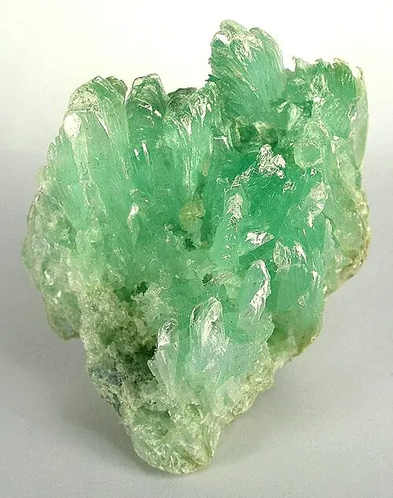
1. MastekNejměkčí minerál stupnice, rýpneš do něj nehtem; na omak je mastný.
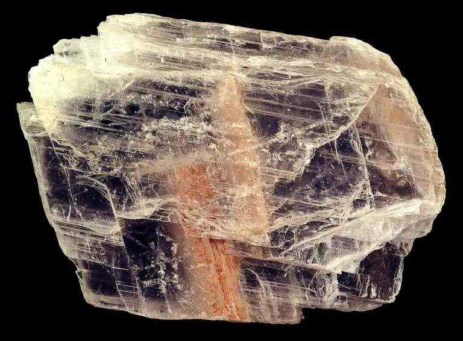
2. SádrovecNehet do něj ještě rýpne. Pálením vzniká sádra.
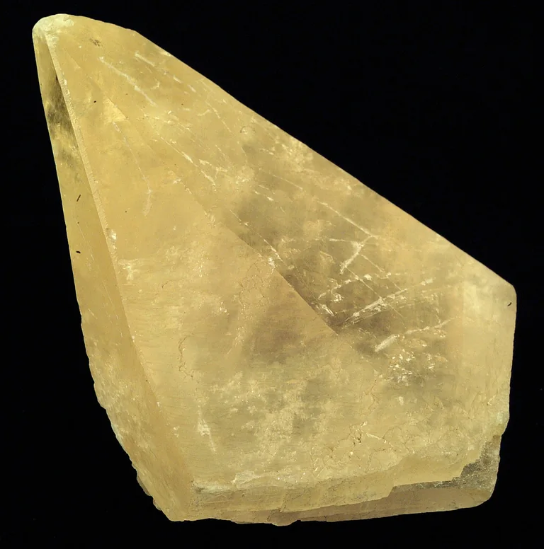
3. KalcitRýpne do něj měděná mince; s kyselinou šumí.
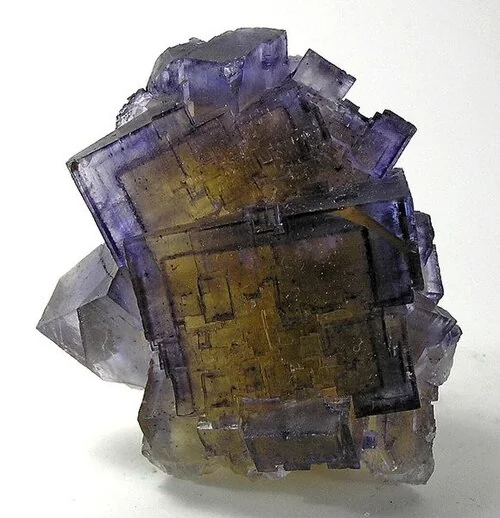
4. FluoritOcelový nůž ho rýpe snadno. Tvoří krychlové krystaly, často fialové.
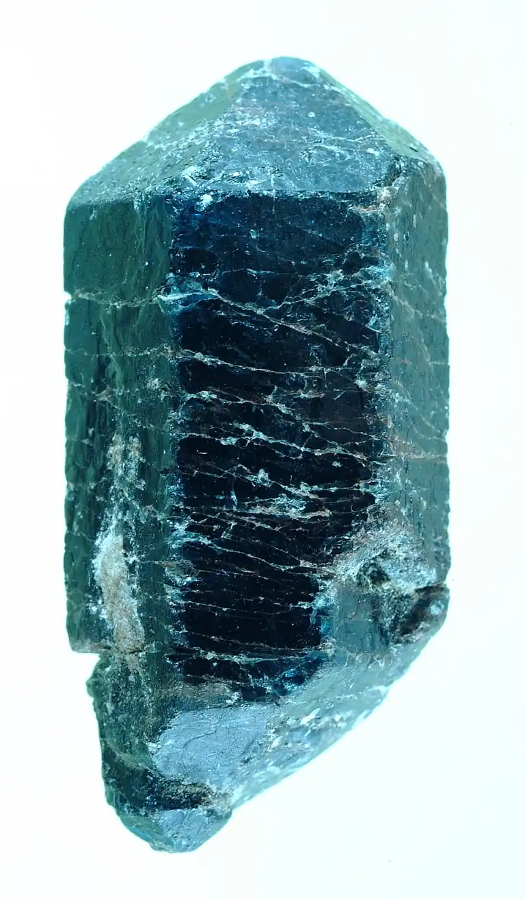
5. ApatitNůž ho rýpe jen s námahou. Příbuzný minerál tvoří kosti a zubní sklovinu.
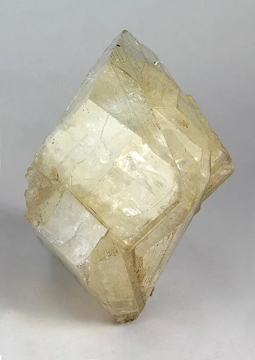
6. Ortoklas (živec)Nůž ho už nerýpe, sám rýpe do skla. Je hlavní součástí žuly.
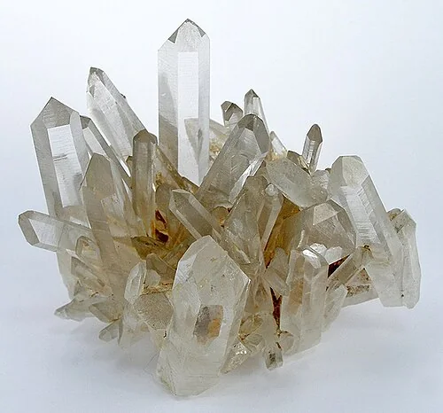
7. KřemenRýpe do skla i do oceli. Je hlavní složkou písku.
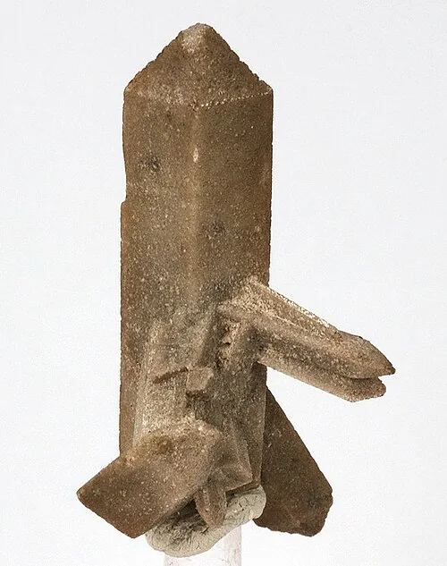
8. TopazTvrdší než křemen; hodí se jako drahý kámen.
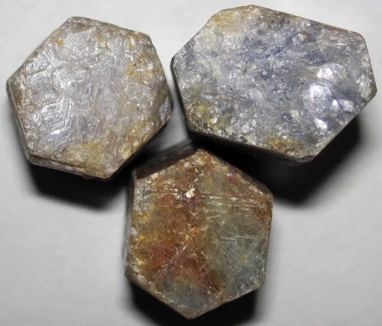
9. KorundJeho odrůdy jsou rubín a safír; užívá se i jako brusivo.
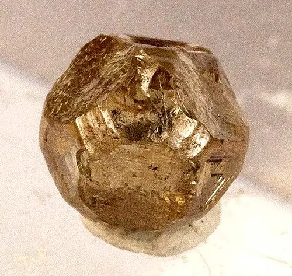
10. DiamantNejtvrdší přírodní látka. Je to čistý uhlík – stejně jako měkký grafit.
🧪 Vryp – barva prášku na neglazované porcelánové destičce
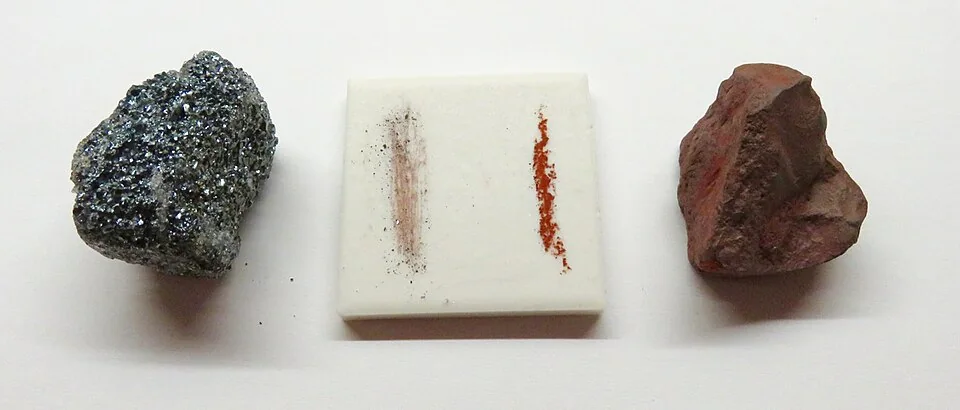
HematitKusy bývají šedočerné i červené, vryp je ale vždy červenohnědý.
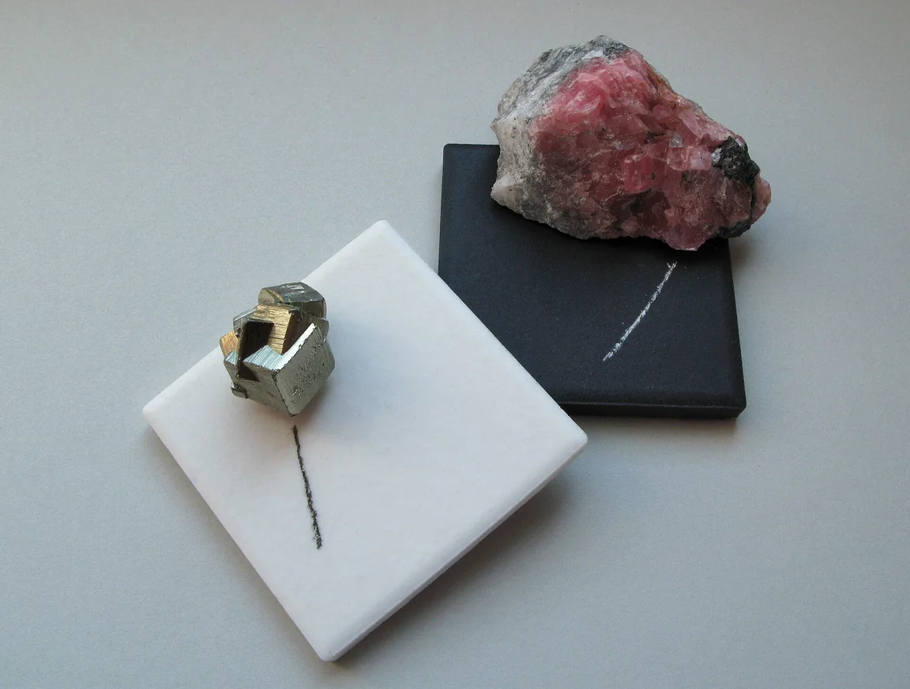
PyritMosazně žlutý minerál zanechá černý vryp – tím se liší od zlata, jehož vryp je žlutý.
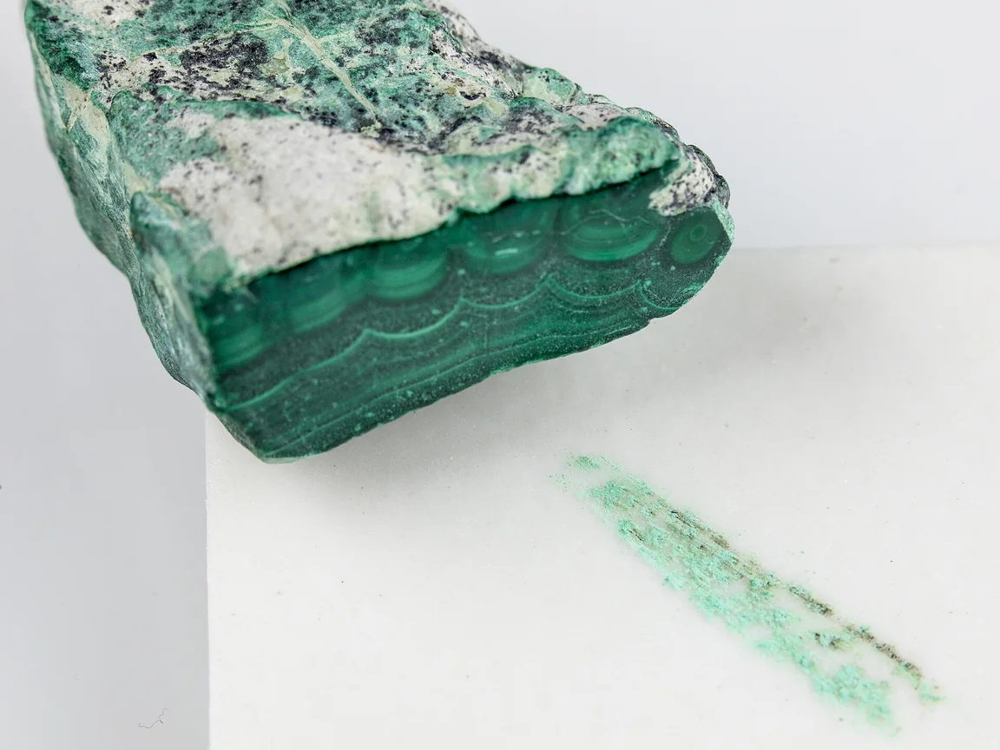
MalachitTmavě zelený pruhovaný minerál má světle zelený vryp.